News Tab :
Note: This Page will only work when CORS is enabled. So please enable the CORS. I am facing this issue since I am not hitting the same domain URL.
This page is listed with news created by admin in the site.
Whatever admin has edited and saved in his editorial page will be listed in this page.
Admin is also having delete editorial page where only he is entitled to delete any article.
Base Technologies used:
1) Angular JS
2) Node JS
Responsive:
Bootstrap Used for this particular section.
DB:
Mongo DB. Hosted in open shift.
TABLE NAME : newsedit
1) Editorial page for admin.
2) Delete Page for admin.
3) News page for the user.
4) Article page for the user.
Flow Diagram 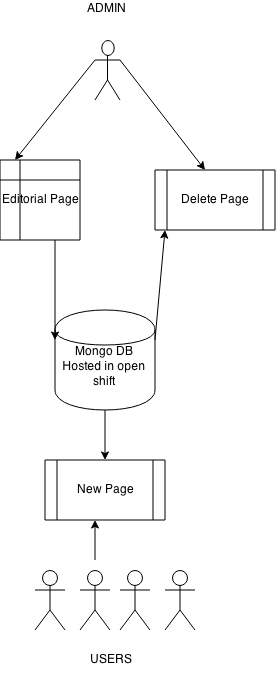
- Editorial page
- News Delete Page
- News Page For User
- News Article For User
-
Explanation Admin only has access to the editorial page. Admin will be able to create an editorial page using drag and drop operations and saving the page. Once the page is saved an url string is sent to insert into Mongo DB.
Access to the page
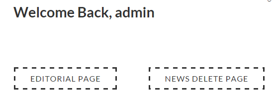
Only admin will have access to the editorial page. Before going into this page we need to login as admin.
Admin input
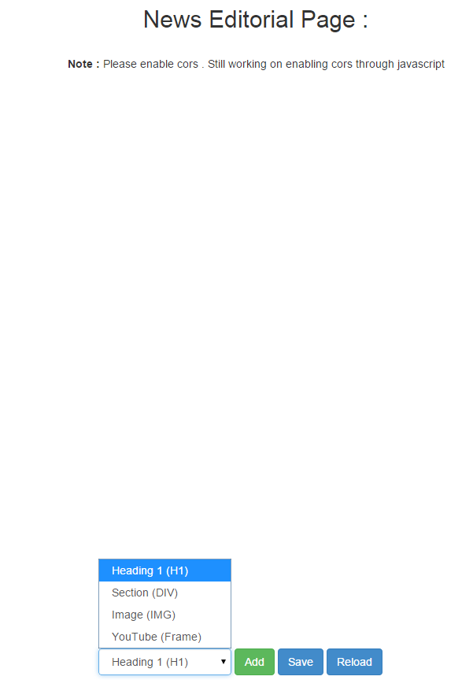
Creating News Example:
Admin will have 4 option to create an editorial page.
1) Heading 1.
2) Div Section
3) Image IMG.
4) YouTube iframe.
Explanation: On click of the add button, admin will be able to add the dom element to the screen and postion on to the screen.
On click of the Save button the data is sent to mongo DB to save in the data base using URL query strings.
On click of the reload the page is refreshed and all the elements in page removed.
User enters all the information to create news .
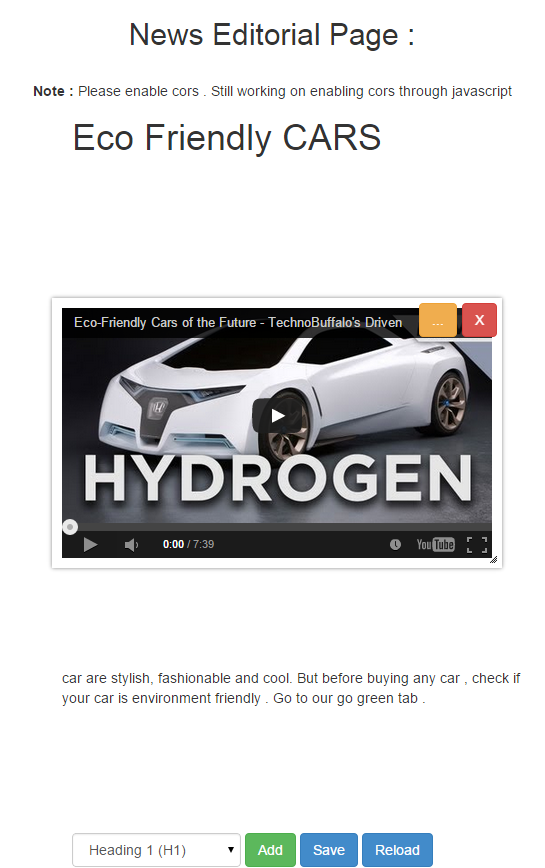
On click on the save button URL sent after:
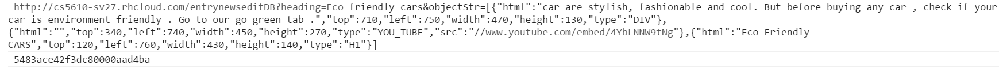
On click on the save button URL sent after:
Url query string is fetched and inserted into Mongo DB hosted in Open shift. Following is the format in which data is saved:
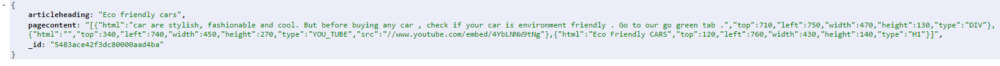
For more technical details go to the following experiments: - >
Source:
CLICK HERE for Drag and delete experiment
CLICK HERE For Mongo DB experiment
Node JS code in Open Shift :
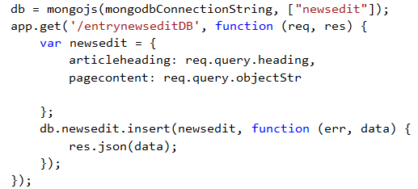
HTML Code
JavaScript -
Explanation
Admin only has access to the editorial page. Admin will be able to create an editorial page using drag and drop operations and saving the page. Once the page is saved an url string is sent to insert into Mongo DB.
Access to this page:
Only admin will have access to the delete page. Before going into this page we need to login as admin.
View page of the admin to delete: 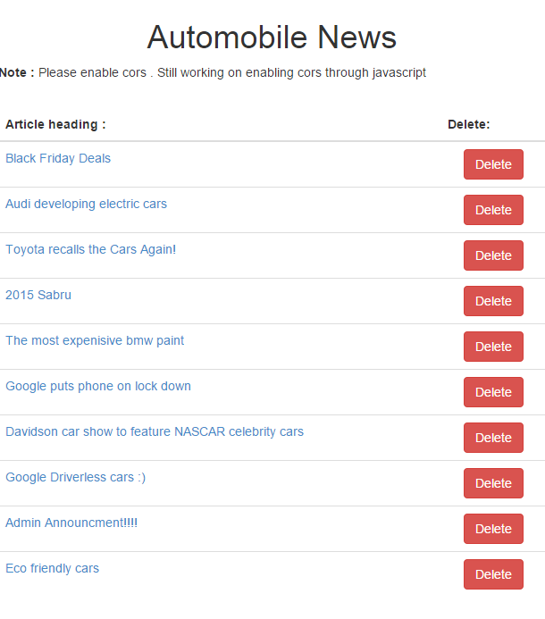
On click of the delete button news article will be deleted
For more technical details go to the experiment: - > CLICK HERE
Source Code Node JS code in Open Shift :
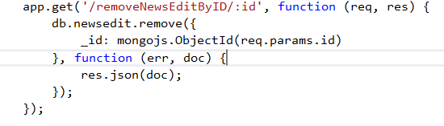
HTML Code
-
Explanation
All the news that are saved by admin are shown in the news page of the user.
Access to the page

News listing page:
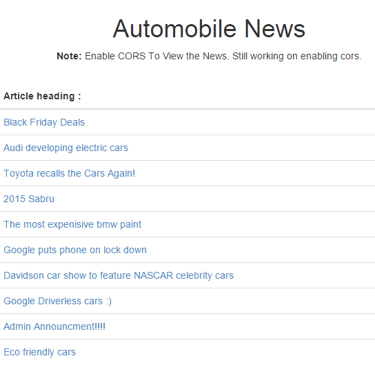
Every news which is created by admin is listed in this page. On click on the article, page will be opened showing the article information that was created by admin. on load of this page mongo DB unique id is associated with each article heading to fetch the information from Mongo DB when a particular article is selected .
For more technical details go to the experiment: - > CLICK HERE For News Page.Experiment
Source Code Node JS code in Open Shift :
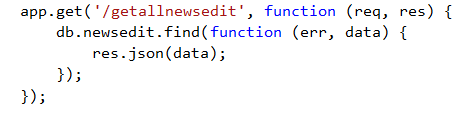
HTML Code
-
Explanation
Article page of the user will be shown on click of the article name, every article is associated with the id, when user clicks on the article the id is sent with URL and with ID again we fetch data using node.js and mongo db hosted in open shift:
Access to this page:
View page of the article
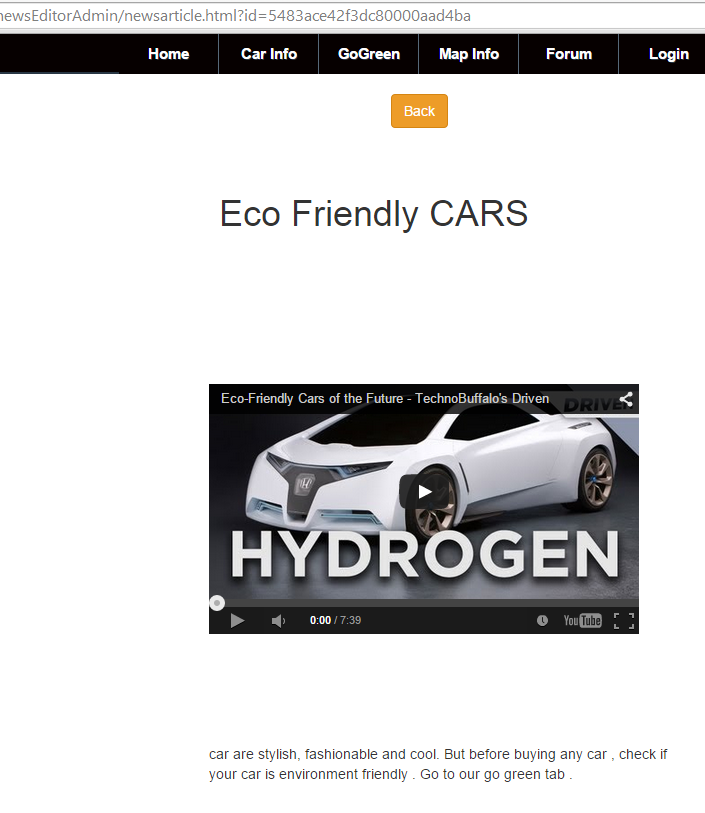
In the above image url contains ID , This id is sent to openshift to fetch details as JSON responce. Below code is shown which is inserted in Node.js
For more technical details go to the experiment: - > CLICK HERE For News Page.Experiment
Source Code Node JS code in Open Shift :
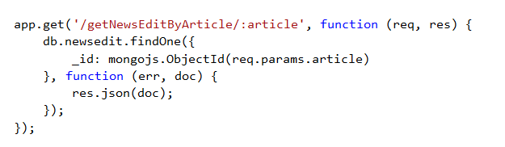
HTML Code